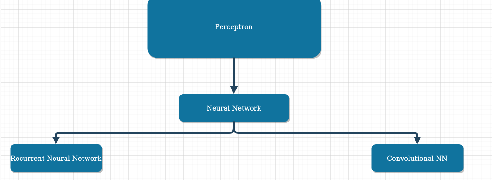

Documentation For Music Generation
About
This was a project that was done as part of an MIT course I was following on Machine Learning. It was on the topic of Recurrent Neural Networks (RNN's). A sample of the audio can be heard below.
- Version: 1.0
- Author: Harnish Design
- Created: 8 April, 2020
- Update: 12 May, 2020
If you have any questions that are beyond the scope of this help file, Please feel free to email via Item Support Page.
Brief Overview of Machine Learning
What I have learnt so far this is like the skeleton of what Machine Learning entails
The Percepteron
This is like the underlying structure of a neural network. It is the Math framework from which neural networks are built.

There is a lot of research going into the percepteron and in fact improvements in their architecture have a lot of direct correlation with improvement in the general performance of ML algorithms. For example in making the best choice of non-linear function and choosing of parameters.
The Neural Network
It is the next layer of abstraction after the percepteron. It is what happens when we feed multiple percepterons in layers with different weights and all.

At this point already the whole process is becoming a bit hard to hold in the head and predict the outcome. Already the possibility of of number of outcomes based on different weight configurations is becoming heavy. Thus the wide application usage and outcome of ML.
The Recurrent Neural Network
It is what we get when the question is what if we want to add some time. For example when we are predicting the next word in a statement. It is important to have information on the previous words said as that has a direct effect on the next word.

Some interesting questions to ask might be
- How do I add the time in the first place?
- How do I make it such that all previous events have sufficient weights and not past events becoming almost irrelevant?
The Convolutional Neural Network
It is the answer to the question what of things like images where the location of the current data in relation to the rest of the image matter

Some interesting questions to ask might be
- How do I do this fast (FFT)?
General Feelings when it comes to ML
I think this XKCD summarises it well